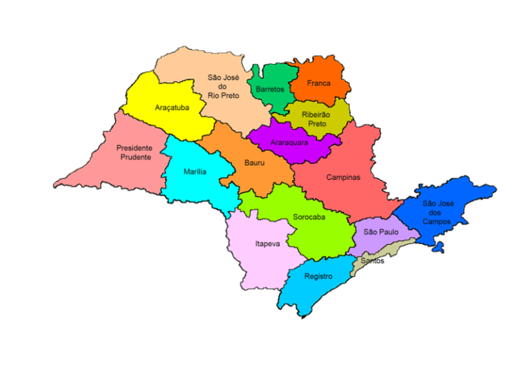
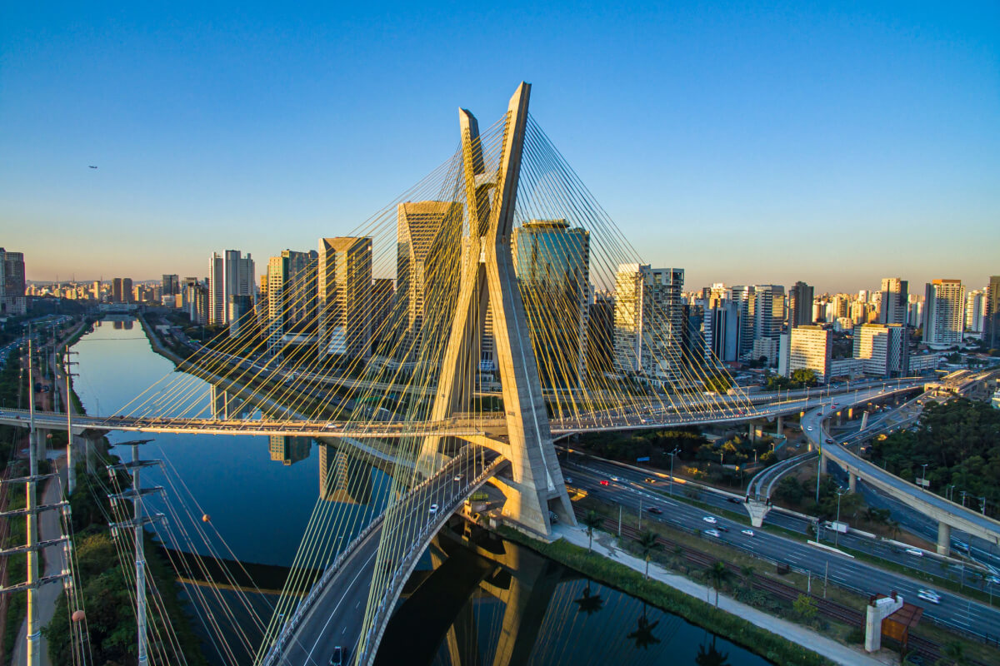
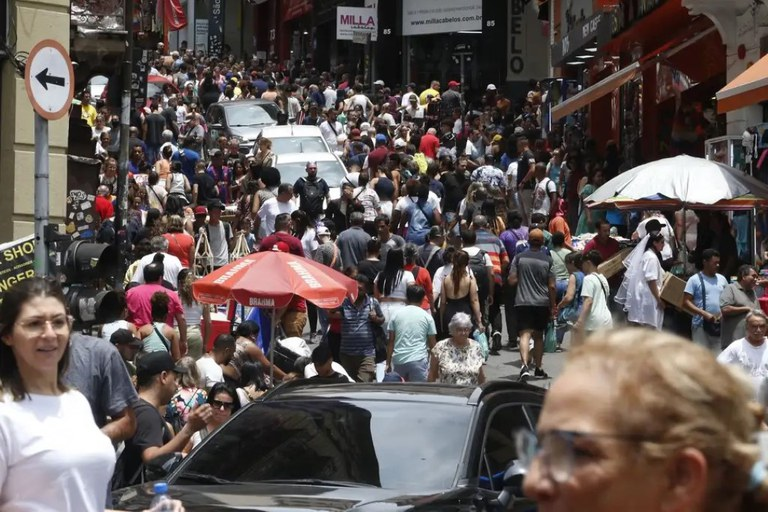

São Paulo é o estado mais populoso do Brasil, com aproximadamente 46 milhões de habitantes, concentrando cerca de 21% da população nacional. A densidade populacional e a diversidade cultural são grandes, com pessoas vindas de várias partes do país e do mundo. A capital, São Paulo, é a maior cidade do país e uma das maiores do mundo, seguida por outras cidades importantes como Campinas, Santos, São Bernardo do Campo e Guarulhos, que também têm grande influência econômica e social.

A economia paulista é a maior do Brasil e uma das mais robustas da América Latina. O estado é um polo industrial e financeiro, com forte presença nos setores automotivo, tecnológico, de serviços e agricultura. A capital São Paulo é o centro financeiro do país, onde está localizada a Bolsa de Valores B3, além de abrigar sedes de grandes empresas nacionais e internacionais. No interior, cidades como Campinas e Ribeirão Preto se destacam pela inovação tecnológica e pela produção agrícola, especialmente na cana-de-açúcar, café e laranja.
No campo político, o governo do estado de São Paulo está atualmente sob a liderança do governador Tarcísio de Freitas, eleito em 2022. Ele enfrenta o desafio de administrar um estado de extrema complexidade, com grandes desigualdades regionais e urbanas. Seu governo tem focado em melhorar a infraestrutura, saúde pública e educação, além de implementar políticas para incentivar o desenvolvimento econômico sustentável e a geração de empregos.

Além disso, São Paulo possui uma grande importância estratégica para o Brasil, não apenas pelo seu peso econômico, mas também pela infraestrutura de transportes, portos e aeroportos que conecta o estado ao resto do país e ao mundo. A diversidade cultural e econômica faz de São Paulo um verdadeiro motor do desenvolvimento brasileiro, com desafios constantes para equilibrar crescimento econômico e qualidade de vida para sua população.

Elaborado por João Pedro Soares de Castro